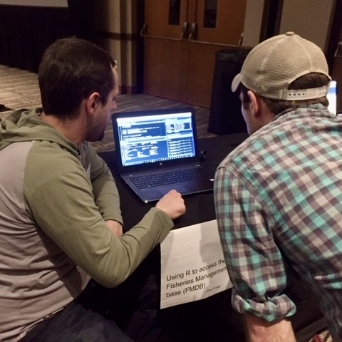
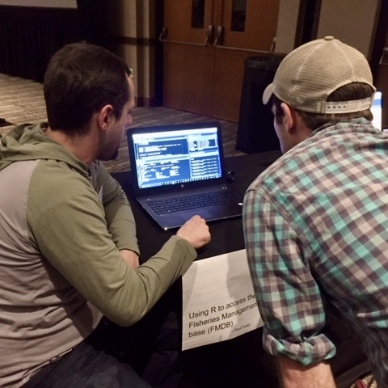

One of the most important steps in research is the dissemination of knowledge and results to a wide audience. I enjoy working collaboratively with educators and the public to explain my own research and show people that science is accessible to everyone.
 
 

R-expo coding workshop
The R-expo is a easy alternative to a full R workshop and helps to teach both both basic and advanced coding in R. Participants engage with R experts in different topics in a casual, open space and partake in short, 5 – 10 minute vignettes that focus on a particular R skill or package (e.g. plotting in ggplot, spatial data analysis, building functions and loops). In this setting, presenters in various fields can teach simultaneously, similar to a poster session,allowing participants to engage in topics that they are interested in and learn at their own pace.
ECHO Science Translation Fellowship
In 2013 I worked with the ECHO Lake Aquarium and Science Center for a year as the science-education fellow to create a symbiotic relationship between ECHO and the Rubenstein Ecosystem Science Laboratory. The goal of my fellowship was to facilitate a relationship where ECHO can benefit from the knowledge and expertise of RSENR researchers while we can benefit from the educational expertise and outreach capacity of ECHO.


CREST teacher workshop
The Champlain Research Experience for Secondary Teachers (CREST) Professional Development Program is a summer workshop that gives 7-12th grade teachers the opportunity to partake in hands on research with professors, udergraduate and graduate students at the University of Vermont. For three years, I worked as the graduate assistant for the CREST program helping plan and facilitate the week-long workshop.
Teaching Assistant University of Vermont
- Guest lecturer Conservation Biology, 2015
- Ecosystem Management, 2014
- Ecology, Ecosystems and Environment, 2013
- Limnology, Fall 2012 & 2013

Contact me: peter.euclide@uwsp.edu